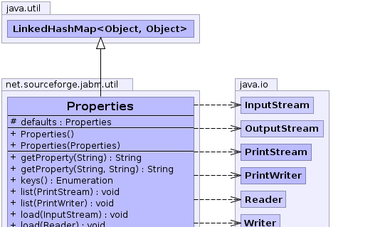
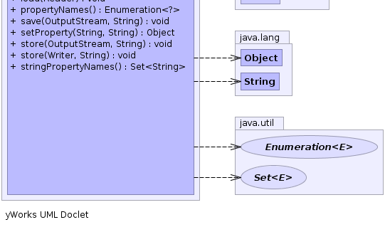

java.util.AbstractMap<K,V>
java.util.HashMap<K,V>
java.util.LinkedHashMap<java.lang.Object,java.lang.Object>
net.sourceforge.jabm.util.Properties
java.util.AbstractMap<K,V>
java.util.HashMap<K,V>
java.util.LinkedHashMap<java.lang.Object,java.lang.Object>
net.sourceforge.jabm.util.Properties
|
|||||||||
| PREV CLASS NEXT CLASS | FRAMES NO FRAMES | ||||||||
| SUMMARY: NESTED | FIELD | CONSTR | METHOD | DETAIL: FIELD | CONSTR | METHOD | ||||||||
java.lang.Object
public class Properties
The Properties class represents a persistent set of
properties. The Properties can be saved to a stream
or loaded from a stream. Each key and its corresponding value in
the property list is a string.
A property list can contain another property list as its "defaults"; this second property list is searched if the property key is not found in the original property list.
Because Properties inherits from Hashtable, the
put and putAll methods can be applied to a
Properties object. Their use is strongly discouraged as they
allow the caller to insert entries whose keys or values are not
Strings. The setProperty method should be used
instead. If the store or save method is called
on a "compromised" Properties object that contains a
non-String key or value, the call will fail. Similarly,
the call to the propertyNames or list method
will fail if it is called on a "compromised" Properties
object that contains a non-String key.
The load(Reader) /
store(Writer, String)
methods load and store properties from and to a character based stream
in a simple line-oriented format specified below.
The load(InputStream) /
store(OutputStream, String)
methods work the same way as the load(Reader)/store(Writer, String) pair, except
the input/output stream is encoded in ISO 8859-1 character encoding.
Characters that cannot be directly represented in this encoding can be written using
Unicode escapes
; only a single 'u' character is allowed in an escape
sequence. The native2ascii tool can be used to convert property files to and
from other character encodings.
The #loadFromXML(InputStream) and #storeToXML(OutputStream, String, String) methods load and store properties
in a simple XML format. By default the UTF-8 character encoding is used,
however a specific encoding may be specified if required. An XML properties
document has the following DOCTYPE declaration:
<!DOCTYPE properties SYSTEM "http://java.sun.com/dtd/properties.dtd">Note that the system URI (http://java.sun.com/dtd/properties.dtd) is not accessed when exporting or importing properties; it merely serves as a string to uniquely identify the DTD, which is:
<?xml version="1.0" encoding="UTF-8"?>
<!-- DTD for properties -->
<!ELEMENT properties ( comment?, entry* ) >
<!ATTLIST properties version CDATA #FIXED "1.0">
<!ELEMENT comment (#PCDATA) >
<!ELEMENT entry (#PCDATA) >
<!ATTLIST entry key CDATA #REQUIRED>
This class is thread-safe: multiple threads can share a single Properties object without the need for external synchronization., Serialized Form
|  |
|  |
| Nested Class Summary |
|---|
| Nested classes/interfaces inherited from class java.util.AbstractMap |
|---|
java.util.AbstractMap.SimpleEntry<K,V>, java.util.AbstractMap.SimpleImmutableEntry<K,V> |
| Field Summary | |
|---|---|
protected Properties |
defaults
A property list that contains default values for any keys not found in this property list. |
| Constructor Summary | |
|---|---|
Properties()
Creates an empty property list with no default values. |
|
Properties(Properties defaults)
Creates an empty property list with the specified defaults. |
|
| Method Summary | |
|---|---|
java.lang.String |
getProperty(java.lang.String key)
Searches for the property with the specified key in this property list. |
java.lang.String |
getProperty(java.lang.String key,
java.lang.String defaultValue)
Searches for the property with the specified key in this property list. |
java.util.Enumeration |
keys()
|
void |
list(java.io.PrintStream out)
Prints this property list out to the specified output stream. |
void |
list(java.io.PrintWriter out)
Prints this property list out to the specified output stream. |
void |
load(java.io.InputStream inStream)
Reads a property list (key and element pairs) from the input byte stream. |
void |
load(java.io.Reader reader)
Reads a property list (key and element pairs) from the input character stream in a simple line-oriented format. |
java.util.Enumeration<?> |
propertyNames()
Returns an enumeration of all the keys in this property list, including distinct keys in the default property list if a key of the same name has not already been found from the main properties list. |
void |
save(java.io.OutputStream out,
java.lang.String comments)
Deprecated. This method does not throw an IOException if an I/O error occurs while saving the property list. The preferred way to save a properties list is via the store(OutputStream out,
String comments) method or the
storeToXML(OutputStream os, String comment) method. |
java.lang.Object |
setProperty(java.lang.String key,
java.lang.String value)
Calls the Hashtable method put. |
void |
store(java.io.OutputStream out,
java.lang.String comments)
Writes this property list (key and element pairs) in this Properties table to the output stream in a format suitable
for loading into a Properties table using the
load(InputStream) method. |
void |
store(java.io.Writer writer,
java.lang.String comments)
Writes this property list (key and element pairs) in this Properties table to the output character stream in a
format suitable for using the load(Reader)
method. |
java.util.Set<java.lang.String> |
stringPropertyNames()
Returns a set of keys in this property list where the key and its corresponding value are strings, including distinct keys in the default property list if a key of the same name has not already been found from the main properties list. |
| Methods inherited from class java.util.LinkedHashMap |
|---|
clear, containsValue, get, removeEldestEntry |
| Methods inherited from class java.util.HashMap |
|---|
clone, containsKey, entrySet, isEmpty, keySet, put, putAll, remove, size, values |
| Methods inherited from class java.util.AbstractMap |
|---|
equals, hashCode, toString |
| Methods inherited from class java.lang.Object |
|---|
finalize, getClass, notify, notifyAll, wait, wait, wait |
| Methods inherited from interface java.util.Map |
|---|
containsKey, entrySet, equals, hashCode, isEmpty, keySet, put, putAll, remove, size, values |
| Field Detail |
|---|
protected Properties defaults
| Constructor Detail |
|---|
public Properties()
public Properties(Properties defaults)
defaults - the defaults.| Method Detail |
|---|
public java.lang.Object setProperty(java.lang.String key,
java.lang.String value)
put. Provided for
parallelism with the getProperty method. Enforces use of
strings for property keys and values. The value returned is the
result of the Hashtable call to put.
key - the key to be placed into this property list.value - the value corresponding to key.
null if it did not have one.getProperty(java.lang.String)
public void load(java.io.Reader reader)
throws java.io.IOException
Properties are processed in terms of lines. There are two
kinds of line, natural lines and logical lines.
A natural line is defined as a line of
characters that is terminated either by a set of line terminator
characters (\n or \r or \r\n)
or by the end of the stream. A natural line may be either a blank line,
a comment line, or hold all or some of a key-element pair. A logical
line holds all the data of a key-element pair, which may be spread
out across several adjacent natural lines by escaping
the line terminator sequence with a backslash character
\. Note that a comment line cannot be extended
in this manner; every natural line that is a comment must have
its own comment indicator, as described below. Lines are read from
input until the end of the stream is reached.
A natural line that contains only white space characters is
considered blank and is ignored. A comment line has an ASCII
'#' or '!' as its first non-white
space character; comment lines are also ignored and do not
encode key-element information. In addition to line
terminators, this format considers the characters space
(' ', '\u0020'), tab
('\t', '\u0009'), and form feed
('\f', '\u000C') to be white
space.
If a logical line is spread across several natural lines, the backslash escaping the line terminator sequence, the line terminator sequence, and any white space at the start of the following line have no affect on the key or element values. The remainder of the discussion of key and element parsing (when loading) will assume all the characters constituting the key and element appear on a single natural line after line continuation characters have been removed. Note that it is not sufficient to only examine the character preceding a line terminator sequence to decide if the line terminator is escaped; there must be an odd number of contiguous backslashes for the line terminator to be escaped. Since the input is processed from left to right, a non-zero even number of 2n contiguous backslashes before a line terminator (or elsewhere) encodes n backslashes after escape processing.
The key contains all of the characters in the line starting
with the first non-white space character and up to, but not
including, the first unescaped '=',
':', or white space character other than a line
terminator. All of these key termination characters may be
included in the key by escaping them with a preceding backslash
character; for example,
\:\=
would be the two-character key ":=". Line
terminator characters can be included using \r and
\n escape sequences. Any white space after the
key is skipped; if the first non-white space character after
the key is '=' or ':', then it is
ignored and any white space characters after it are also
skipped. All remaining characters on the line become part of
the associated element string; if there are no remaining
characters, the element is the empty string
"". Once the raw character sequences
constituting the key and element are identified, escape
processing is performed as described above.
As an example, each of the following three lines specifies the key
"Truth" and the associated element value
"Beauty":
Truth = Beauty
Truth:Beauty
Truth :Beauty
As another example, the following three lines specify a single
property:
fruits apple, banana, pear, \
cantaloupe, watermelon, \
kiwi, mango
The key is "fruits" and the associated element is:
"apple, banana, pear, cantaloupe, watermelon, kiwi, mango"Note that a space appears before each
\ so that a space
will appear after each comma in the final result; the \,
line terminator, and leading white space on the continuation line are
merely discarded and are not replaced by one or more other
characters.
As a third example, the line:
cheesesspecifies that the key is
"cheeses" and the associated
element is the empty string "".
Characters in keys and elements can be represented in escape sequences similar to those used for character and string literals (see §3.3 and §3.10.6 of the Java Language Specification). The differences from the character escape sequences and Unicode escapes used for characters and strings are:
\b does not
represent a backspace character.
\, before a non-valid escape character as an
error; the backslash is silently dropped. For example, in a
Java string the sequence "\z" would cause a
compile time error. In contrast, this method silently drops
the backslash. Therefore, this method treats the two character
sequence "\b" as equivalent to the single
character 'b'.
The specified stream remains open after this method returns.
reader - the input character stream.
java.io.IOException - if an error occurred when reading from the
input stream.
java.lang.IllegalArgumentException - if a malformed Unicode escape
appears in the input.
public void load(java.io.InputStream inStream)
throws java.io.IOException
load(Reader) and is assumed to use
the ISO 8859-1 character encoding; that is each byte is one Latin1
character. Characters not in Latin1, and certain special characters,
are represented in keys and elements using
Unicode escapes.
The specified stream remains open after this method returns.
inStream - the input stream.
java.io.IOException - if an error occurred when reading from the
input stream.
java.lang.IllegalArgumentException - if the input stream contains a
malformed Unicode escape sequence.
@Deprecated
public void save(java.io.OutputStream out,
java.lang.String comments)
store(OutputStream out,
String comments) method or the
storeToXML(OutputStream os, String comment) method.
store(OutputStream out, String comments) method
and suppresses IOExceptions that were thrown.
out - an output stream.comments - a description of the property list.
java.lang.ClassCastException - if this Properties object
contains any keys or values that are not
Strings.
public void store(java.io.Writer writer,
java.lang.String comments)
throws java.io.IOException
Properties table to the output character stream in a
format suitable for using the load(Reader)
method.
Properties from the defaults table of this Properties
table (if any) are not written out by this method.
If the comments argument is not null, then an ASCII #
character, the comments string, and a line separator are first written
to the output stream. Thus, the comments can serve as an
identifying comment. Any one of a line feed ('\n'), a carriage
return ('\r'), or a carriage return followed immediately by a line feed
in comments is replaced by a line separator generated by the Writer
and if the next character in comments is not character # or
character ! then an ASCII # is written out
after that line separator.
Next, a comment line is always written, consisting of an ASCII
# character, the current date and time (as if produced
by the toString method of Date for the
current time), and a line separator as generated by the Writer.
Then every entry in this Properties table is
written out, one per line. For each entry the key string is
written, then an ASCII =, then the associated
element string. For the key, all space characters are
written with a preceding \ character. For the
element, leading space characters, but not embedded or trailing
space characters, are written with a preceding \
character. The key and element characters #,
!, =, and : are written
with a preceding backslash to ensure that they are properly loaded.
After the entries have been written, the output stream is flushed. The output stream remains open after this method returns.
writer - an output character stream writer.comments - a description of the property list.
java.io.IOException - if writing this property list to the specified
output stream throws an IOException.
java.lang.ClassCastException - if this Properties object
contains any keys or values that are not Strings.
java.lang.NullPointerException - if writer is null.
public void store(java.io.OutputStream out,
java.lang.String comments)
throws java.io.IOException
Properties table to the output stream in a format suitable
for loading into a Properties table using the
load(InputStream) method.
Properties from the defaults table of this Properties
table (if any) are not written out by this method.
This method outputs the comments, properties keys and values in
the same format as specified in
store(Writer),
with the following differences:
\uxxxx for their appropriate unicode
hexadecimal value xxxx.
\u0020 and characters greater
than \u007E in property keys or values are written
as \uxxxx for the appropriate hexadecimal
value xxxx.
After the entries have been written, the output stream is flushed. The output stream remains open after this method returns.
out - an output stream.comments - a description of the property list.
java.io.IOException - if writing this property list to the specified
output stream throws an IOException.
java.lang.ClassCastException - if this Properties object
contains any keys or values that are not Strings.
java.lang.NullPointerException - if out is null.public java.util.Enumeration keys()
public java.lang.String getProperty(java.lang.String key)
null if the property is not found.
key - the property key.
setProperty(java.lang.String, java.lang.String),
defaults
public java.lang.String getProperty(java.lang.String key,
java.lang.String defaultValue)
key - the hashtable key.defaultValue - a default value.
setProperty(java.lang.String, java.lang.String),
defaultspublic java.util.Enumeration<?> propertyNames()
java.lang.ClassCastException - if any key in this property list
is not a string.Enumeration,
Properties.defaults,
stringPropertyNames()public java.util.Set<java.lang.String> stringPropertyNames()
The returned set is not backed by the Properties object. Changes to this Properties are not reflected in the set, or vice versa.
Properties.defaultspublic void list(java.io.PrintStream out)
out - an output stream.
java.lang.ClassCastException - if any key in this property list
is not a string.public void list(java.io.PrintWriter out)
out - an output stream.
java.lang.ClassCastException - if any key in this property list
is not a string.
|
|||||||||
| PREV CLASS NEXT CLASS | FRAMES NO FRAMES | ||||||||
| SUMMARY: NESTED | FIELD | CONSTR | METHOD | DETAIL: FIELD | CONSTR | METHOD | ||||||||